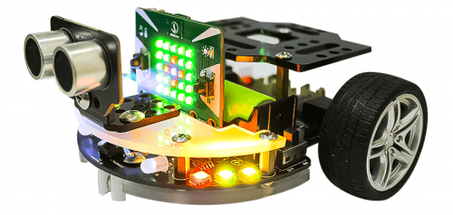

5. Sa bàn điều khiển robot đối kháng
1. Giới thiệu sa bàn
Đây là sa bàn dành riêng cho các phần thi điều khiển robot bằng tay trực tiếp, chứ không cần phải lập trình robot tự động như các sa bàn khác. Bạn sẽ điều khiển robot để gắp và di chuyển vật thể.
Sa bàn có thiết kế đối xứng 2 bên, để bạn có thể tổ chức 2 đội thi cùng lúc.
Sa bàn được in bằng chất liệu bạt, với kích thước 4,2m x 2,1m. Trên bản đồ sẽ có kèm theo 10 mô hình gạch xốp để phục vụ cho các thử thách trong cuộc thi Robot.
{kind=link}
Sa bàn điều khiển robot đối kháng
Trên bản đồ sẽ có kèm theo 8 mô hình vòng ném bóng kèm theo 10 quả bóng để phục vụ cho các thử thách trong cuộc thi Robot.
Vòng ném bóng có kích thước cao khoảng 30 - 45cm, đường kính vòng tròn khoảng 20cm. Quả bóng để bắn có đường kính khoảng 4cm.
2. Mua sa bàn

3. Các dụng cụ cần thiết
Các dụng cụ cần thiết để thi đấu ở sa bàn này, bạn có thể chọn 1 trong 2 bộ thiết bị như sau:
|  | 
|

|
|---|---|---|
Robot Rover |
Đầu gắp Gripper |
Tay cầm điều khiển Gamepad (kèm Yolo:Bit) |
{kind=link}

|
|
|
|---|---|---|
Robot Rover |
Đầu gắp Gripper |
Tay cầm điều khiển Gamepad (kèm Yolo:Bit) |
{kind=link}
4. Giới thiệu về luật thi đấu
Luật thi gợi ý:
Như đã trình bày, ở chính giữa sân thi đấu sẽ có 10 mô hình gạch xốp chia đều cho 2 đội được đặt ở vị trí A và C. Ban đầu, robot được đặt ở vị trí xuất phát.
{kind=link}
Khi có tín hiệu suất phát từ trọng tài, các đội điều khiển robot lần lượt thực hiện nhiệm vụ theo thứ tự:
Nhiệm vụ 1: Điều khiển robot đẩy các viên gạch tại vị trí A đến vị trí B của phần sân bên đội mình.
Nhiệm vụ 2: Điều khiển robot đẩy viên gạch tại vị trí C đến vị trí D.
Trận đấu sẽ kết thúc khi quá thời gian 3 phút hoặc có 1 trong 2 đội thi hoàn thành nhiệm vụ 2. Trường hợp không có viên gạch nào được đặt thành công tại vị trí D sau khi kết thúc thời gian thi đấu, đội thi nào có số gạch nhiều hơn và hoàn thành trong thời gian ngắn hơn sẽ giành chiến thắng.
Bạn có thể cho mỗi đội thi đấu 2 lượt, sau đó tính tổng điểm của 2 lượt này để xếp hạng thành tích của các đội thi. Các đội có thành tích cao nhất sẽ chiến thắng.
Hướng dẫn:
Với sa bàn này, bạn có thể trực tiếp điều khiển robot bằng điện thoại / laptop hoặc máy tính bảng thông qua phần mềm OhStem App. Ngoài ra, bạn cũng có thể điều khiển robot bằng GamePad do OhStem cung cấp tùy thích.